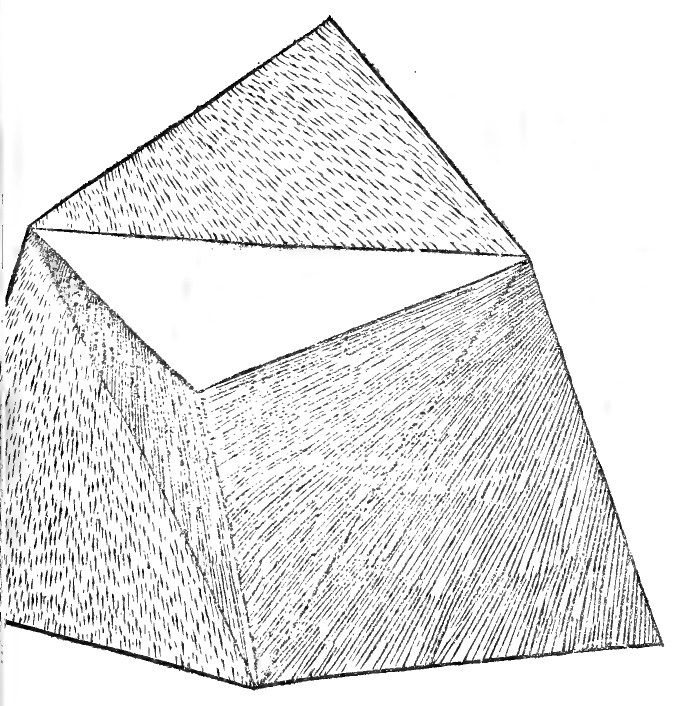
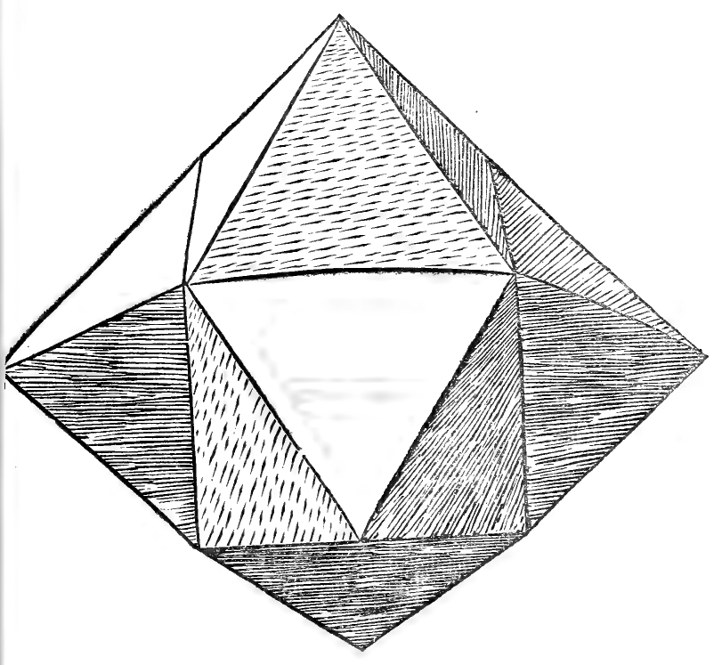
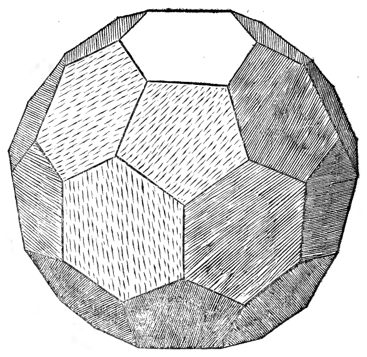
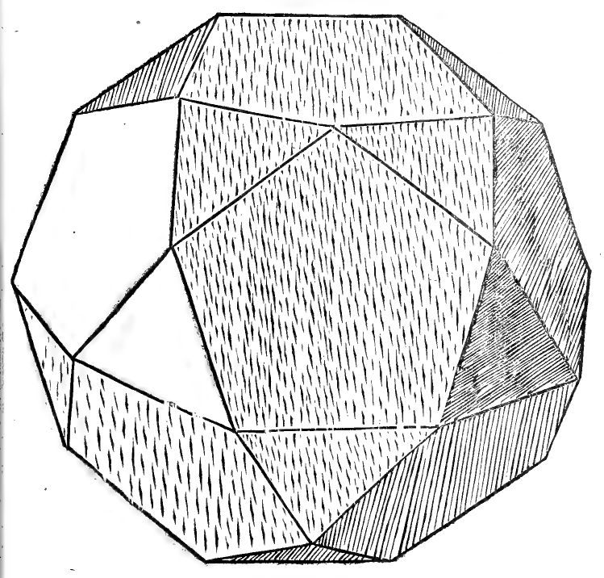

Leonardo da Vinci’s Polyhedral Plates (1509)¶
The Sixty Woodcut Plates of Luca Pacioli’s De Divina Proportione
…per mano del nostro Lionardo da Vinci Fiorentino, che di pictura, prospettiva, architettura, e musica in ciascuna ha dato opera con somma laude, il quale con sua propria mano tutti questi solidi ed altri ha composti e figurati…
…by the hand of our own Leonardo da Vinci the Florentine, who in painting, perspective, architecture, and music has laboured with the highest praise, and who with his own hand has constructed and figured all these solids and others…
—Luca Pacioli, De Divina Proportione, Cap. I & Cap. XXIII (Venice, 1509)
Historical & Artistic Context¶
In 1496, the Franciscan friar, Renaissance humanist, and master mathematician Luca Pacioli arrived at the Milanese court of Duke Ludovico Sforza (Il Moro). There he entered into an intimate intellectual partnership with Leonardo da Vinci, instructing Leonardo in Euclidean geometry, proportional theory, and the rigorous mathematical perspective of Piero della Francesca.
In return, Leonardo composed sixty masterly drawings of polyhedra to illustrate Pacioli’s seminal treatise De Divina Proportione (completed in manuscript in Milan in 1498 and printed at Venice by Paganino de’ Paganini in May 1509). Leonardo’s woodcuts represent a watershed moment in the history of science and art: they are the first published polyhedral illustrations in Western history to render both opaque solid bodies (corpora solida) and hollow wooden lattice frameworks (corpora vacua) with perspective depth, dramatic chiaroscuro illumination, and mitered carpentry joints.
Taxonomy of Polyhedral Variations¶
For each regular solid, Leonardo created four systematic architectural variations:
Solidum (Planum Solidum): A closed convex body with opaque planar facets, rendered with parallel woodcut hatching to indicate directional lighting and cast shadow.
Vacuum (Planum Vacuum): A hollow, open-lattice wooden framework composed of mitered boundary beams around central window apertures, exposing the interior geometry, antipodal faces, and three-dimensional perspective depth.
Abscisum (Truncatum): The Archimedean truncated solid, obtained by cutting off vertices to create new regular polygonal facets.
Elevatum (Stellatum / Cum Pyramide): The stellated solid, erecting regular pyramids on each polygonal facet.
The Mathematical Structure of Leonardo’s Corpora Vacua¶
Leonardo’s hollow models (corpora vacua) were not mere artistic fantasies: they were real wooden structures crafted by Leonardo and Pacioli and suspended from the ceiling of Duke Ludovico Sforza’s banquet hall. In geometor.polyhedra, Leonardo’s hollow framework is formalized as the exact algebraic operator vacuate(solid, aperture=μ, shell=λ).
The Vacuate Manifold Theorem¶
Let \(S\) be an orientable, closed 2-manifold polyhedral solid with \(V\) vertices, \(E\) edges, and \(F\) planar faces, where each face \(f_i\) is a \(k_i\)-sided polygon.
Let \(\mu \in (0, 1) \cap \mathbb{Q}\) be the window aperture shrink factor (default \(\mu = 3/5\)), and let \(\lambda \in (0, 1) \cap \mathbb{Q}\) be the inner concentric shell shrink factor (default \(\lambda = 4/5\)). For every face \(f\), let \(c_f = \frac{1}{k} \sum_{m=1}^k v_m\) be its affine centroid.
For each face vertex \(v_m\), define the outer window vertex \(w_m\) and the corresponding inner shell vertices \(v'_m, w'_m\) by:
Then the resulting hollow manifold solid \(S_{\text{vac}} = \text{vacuate}(S, \mu, \lambda)\) satisfies the following exact structural invariants:
Exact Number Field Invariance: Because \(c_f\) is an affine combination with rational weights \(1/k\), and \(\mu, \lambda \in \mathbb{Q}\), all generated coordinates of \(w_m, v'_m, w'_m\) belong to the exact same algebraic number field as the parent solid \(S\) (e.g., \(\mathbb{Q}\) for the Tetrahedron, Hexahedron, and Octahedron; \(\mathbb{Q}(\phi)\) for the Icosahedron and Dodecahedron). Zero radical tower extensions or floating-point approximations are introduced.
Vertex Cardinality: The hollow body comprises four concentric sets of vertices: original outer vertices (\(V\)), inner shell vertices (\(V\)), outer window reveal vertices (\(\sum k_i = 2E\)), and inner window reveal vertices (\(2E\)):
\[V_{\text{vac}} = V + V + 2E + 2E = 2V + 4E\]Face Cardinality & Strict Coplanarity: Around each face opening of degree \(k\), exactly three rings of quadrilaterals are formed: - \(k\) outer frame trapezoids (\(v_m, v_{m+1}, w_{m+1}, w_m\)) lying strictly in the parent face plane. - \(k\) inner frame trapezoids (\(v'_{m+1}, v'_m, w'_m, w'_{m+1}\)) lying strictly in the parallel scaled inner plane. - \(k\) window reveal jambs (\(w_m, w_{m+1}, w'_{m+1}, w'_m\)) lying in the radial plane connecting the edge to the origin.
Summing over all faces:
\[F_{\text{vac}} = \sum_{i=1}^F 3 k_i = 3 \sum_{i=1}^F k_i = 3(2E) = 6E\]Every one of these \(6E\) faces is a strictly coplanar planar quadrilateral.
Edge Cardinality: Since every face of \(S_{\text{vac}}\) is a quadrilateral (4 boundary edges) and every edge in a closed 2-manifold borders exactly 2 faces:
\[2 E_{\text{vac}} = 4 F_{\text{vac}} \implies E_{\text{vac}} = 2 F_{\text{vac}} = 12E\]Euler Characteristic & Topological Genus: The Euler characteristic \(\chi_{\text{vac}}\) of the hollow manifold is:
\[\chi_{\text{vac}} = V_{\text{vac}} - E_{\text{vac}} + F_{\text{vac}} = (2V + 4E) - 12E + 6E = 2(V - E)\]Since the parent solid satisfies \(V - E + F = 2 \implies V - E = 2 - F\), substitution yields:
\[\chi_{\text{vac}} = 2(2 - F) = 4 - 2F\]For an orientable closed surface of genus \(g\), \(\chi = 2 - 2g\). Equating:
\[2 - 2g = 4 - 2F \implies 2g = 2F - 2 \implies g = F - 1\]The topological genus of Leonardo’s hollow cage is precisely one less than the number of faces of the parent solid! Every face aperture acts as a through-hole (handle) into the central hollow cavity.
Topological Invariants of the Platonic Vacua¶
Solid |
Base $V$ |
Base $E$ |
Base $F$ |
$V_{\text{vac}}$ |
$E_{\text{vac}}$ |
$F_{\text{vac}}$ |
$\chi_{\text{vac}}$ |
Genus $g$ |
|---|---|---|---|---|---|---|---|---|
Tetrahedron |
4 |
6 |
4 |
32 |
72 |
36 |
$-4$ |
3 |
Hexahedron |
8 |
12 |
6 |
64 |
144 |
72 |
$-8$ |
5 |
Octahedron |
6 |
12 |
8 |
60 |
144 |
72 |
$-12$ |
7 |
Dodecahedron |
20 |
30 |
12 |
160 |
360 |
180 |
$-20$ |
11 |
Icosahedron |
12 |
30 |
20 |
144 |
360 |
180 |
$-36$ |
19 |
Leonardo Plate Concordance (Tabulae I–LII)¶
The following concordance correlates all forty principal polyhedral plates of Leonardo da Vinci from the 1509 Paganini edition with their high-resolution folio scans, Latin inscriptions, and modern geometric designations:
Solid |
Variant |
Plate |
Folio |
Latin Inscription (1509) |
|---|---|---|---|---|
Tetrahedron |
solidum |
Tabula I |
Folio 0187 |
Tetrahedron Planum Solidum |
vacuum ($g=3$) |
Tabula II |
Folio 0189 |
Tetrahedron Planum Vacuum |
|
abscisum solidum |
Tabula III |
Folio 0191 |
Tetrahedron Abscisum Solidum |
|
abscisum vacuum |
Tabula IIII |
Folio 0193 |
Tetrahedron Abscisum Vacuum |
|
elevatum solidum |
Tabula V |
Folio 0195 |
Tetrahedron Elevatum Solidum |
|
elevatum vacuum |
Tabula VI |
Folio 0197 |
Tetrahedron Elevatum Vacuum |
|
Hexahedron |
solidum |
Tabula VII |
Folio 0199 |
Exahedron sive Cubus Planum Solidum |
vacuum ($g=5$) |
Tabula VIII |
Folio 0201 |
Exahedron Planum Vacuum |
|
abscisum solidum |
Tabula VIIII |
Folio 0203 |
Exahedron Abscisum Solidum |
|
abscisum vacuum |
Tabula X |
Folio 0205 |
Exahedron Abscisum Vacuum |
|
elevatum solidum |
Tabula XI |
Folio 0207 |
Exahedron Elevatum Solidum |
|
elevatum vacuum |
Tabula XII |
Folio 0209 |
Exahedron Elevatum Vacuum |
|
abscisum elevatum solidum |
Tabula XIII |
Folio 0211 |
Exahedron Abscisum Elevatum Solidum |
|
abscisum elevatum vacuum |
Tabula XIIII |
Folio 0217 |
Exahedron Abscisum Elevatum Vacuum [1] |
|
Octahedron |
solidum |
Tabula XV |
Folio 0219 |
Octahedron Planum Solidum |
vacuum ($g=7$) |
Tabula XVI |
Folio 0221 |
Octahedron Planum Vacuum |
|
abscisum solidum |
Tabula XVII |
Folio 0223 |
Octahedron Abscisum Solidum |
|
abscisum vacuum |
Tabula XVIII |
Folio 0225 |
Octahedron Abscisum Vacuum |
|
elevatum solidum (Stella Octangula) |
Tabula XIX |
Folio 0227 |
Octahedron Elevatum Solidum |
|
elevatum vacuum |
Tabula XX |
Folio 0229 |
Octahedron Elevatum Vacuum |
|
Icosahedron |
solidum |
Tabula XXI |
Folio 0231 |
Icosahedron Planum Solidum |
vacuum ($g=19$) |
Tabula XXII |
Folio 0233 |
Icosahedron Planum Vacuum |
|
abscisum solidum (Fullerene) |
Tabula XXIII |
Folio 0235 |
Icosahedron Abscisum Solidum |
|
abscisum vacuum |
Tabula XXIIII |
Folio 0237 |
Icosahedron Abscisum Vacuum |
|
elevatum solidum |
Tabula XXV |
Folio 0239 |
Icosahedron Elevatum Solidum |
|
elevatum vacuum |
Tabula XXVI |
Folio 0241 |
Icosahedron Elevatum Vacuum |
|
Dodecahedron |
solidum |
Tabula XXVII |
Folio 0243 |
Dodecahedron Planum Solidum |
vacuum ($g=11$) |
Tabula XXVIII |
Folio 0245 |
Dodecahedron Planum Vacuum |
|
abscisum solidum |
Tabula XXIX |
Folio 0247 |
Dodecahedron Abscisum Solidum |
|
abscisum vacuum |
Tabula XXX |
Folio 0249 |
Dodecahedron Abscisum Vacuum |
|
elevatum solidum |
Tabula XXXI |
Folio 0251 |
Dodecahedron Elevatum Solidum |
|
elevatum vacuum |
Tabula XXXII |
Folio 0253 |
Dodecahedron Elevatum Vacuum |
|
abscisum elevatum solidum |
Tabula XXXIII |
Folio 0255 |
Dodecahedron Abscisum Elevatum Solidum |
|
abscisum elevatum vacuum |
Tabula XXXIIII |
Folio 0257 |
Dodecahedron Abscisum Elevatum Vacuum |
|
Vigintisex Basium |
solidum (Rhombicuboctahedron) |
Tabula XXXV |
Folio 0259 |
Vigintisex Basium Planum Solidum |
vacuum |
Tabula XXXVI |
Folio 0261 |
Vigintisex Basium Planum Vacuum |
|
Pyramis Quadrangula |
solida (Square Pyramid) |
Tabula XLVII |
Folio 0283 |
Pyramis Laterata Quadrangula Solida |
vacua ($g=4$) |
Tabula XLVIII |
Folio 0287 |
Pyramis Laterata Quadrangula Vacua |
|
Pyramis Penthagona |
solida ($J_2$) |
Tabula LI |
Folio 0293 |
Pyramis Laterata Penthagona Solida |
vacua ($g=5$) |
Tabula LII |
Folio 0295 |
Pyramis Laterata Penthagona Vacua |
Leonardo Plate Collection (20 Paired Woodcut Studies)¶

Tabulae I–II: Tetrahedron Planum Solidum et Vacuum (1509)

Tabulae III–IIII: Tetrahedron Abscisum Solidum et Vacuum (1509)

Tabulae V–VI: Tetrahedron Elevatum Solidum et Vacuum (1509)

Tabulae VII–VIII: Exahedron Planum Solidum et Vacuum (1509)

Tabulae VIIII–X: Exahedron Abscisum Solidum et Vacuum (1509)

Tabulae XI–XII: Exahedron Elevatum Solidum et Vacuum (1509)

Tabulae XIII–XIIII: Exahedron Abscisum Elevatum Solidum et Vacuum (1509)

Tabulae XV–XVI: Octahedron Planum Solidum et Vacuum (1509)

Tabulae XVII–XVIII: Octahedron Abscisum Solidum et Vacuum (1509)

Tabulae XIX–XX: Octahedron Elevatum — Stella Octangula (1509)

Tabulae XXI–XXII: Icosahedron Planum Solidum et Vacuum (1509)

Tabulae XXIII–XXIIII: Icosahedron Abscisum — The Fullerene (1509)

Tabulae XXV–XXVI: Icosahedron Elevatum Solidum et Vacuum (1509)

Tabulae XXVII–XXVIII: Dodecahedron Planum Solidum et Vacuum (1509)

Tabulae XXIX–XXX: Dodecahedron Abscisum Solidum et Vacuum (1509)

Tabulae XXXI–XXXII: Dodecahedron Elevatum Solidum et Vacuum (1509)

Tabulae XXXIII–XXXIIII: Dodecahedron Abscisum Elevatum Solidum et Vacuum (1509)

Tabulae XXXV–XXXVI: Vigintisex Basium Planum Solidum et Vacuum (1509)

Tabulae XLVII–XLVIII: Pyramis Quadrangula Solida et Vacua (1509)